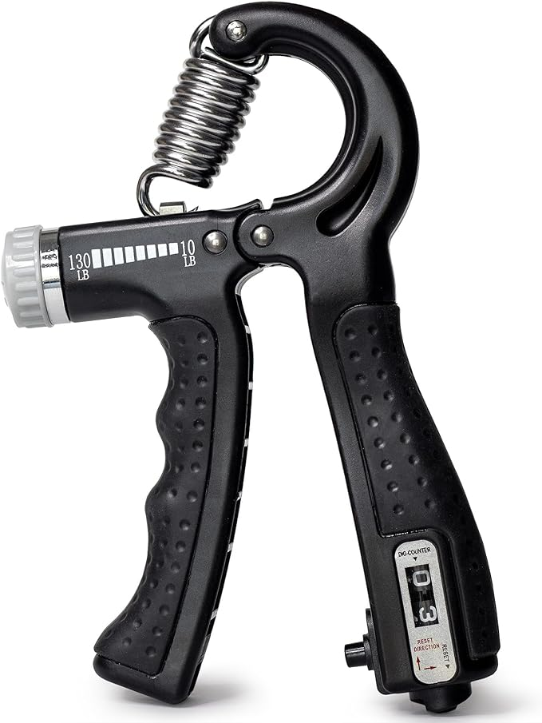

Our first product
DMI Compact Hand Exercise Grip Strengtheners with
Adjustable Weight Resistance from 10-130lbs, Grip Tracker keeps
Track of Number of Squeezes
About item
-
This hand grip trainer from DMI makes it easy to increase strength
and flexibility in your grip, forearms, wrists, and fingers.
Easily adjust the resistance from 10-130lbs to customize your routine. -
The grip strength trainer is designed to be used as a rehabilitation
aid as well. Light resistance options with a simple rotary
knob starts you with low resistance to recover from hand and arm injuries. -
A built-in squeeze (grip) counter keeps track of every movement for
exercise routine consistency and to track your strength progression. -
The hand strengtheners come in a set of two, and getting
started is a breeze with our included quick start guide.
Price : $8.99
You have bought: 0